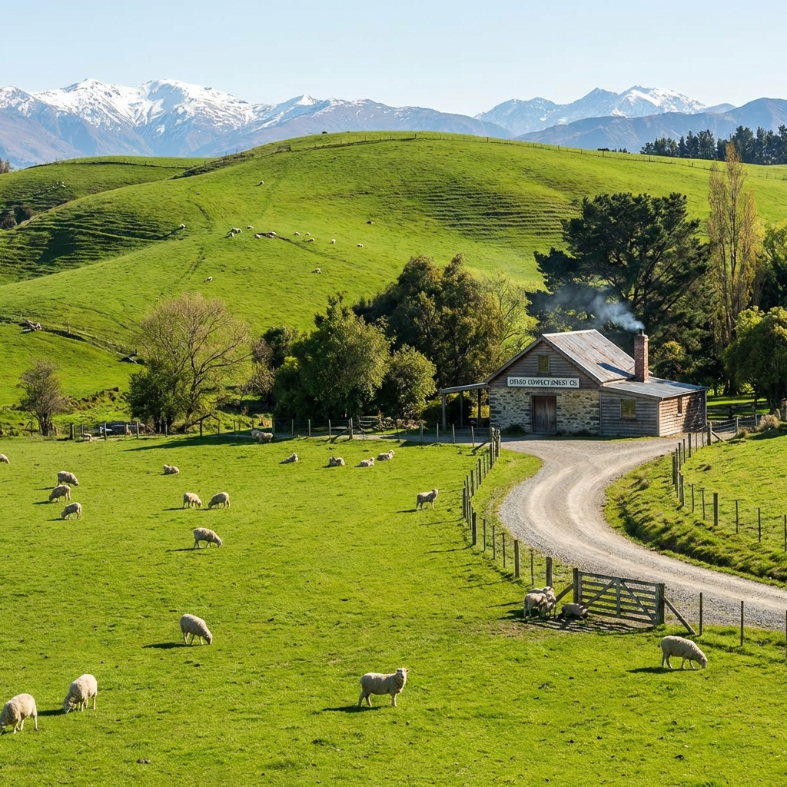
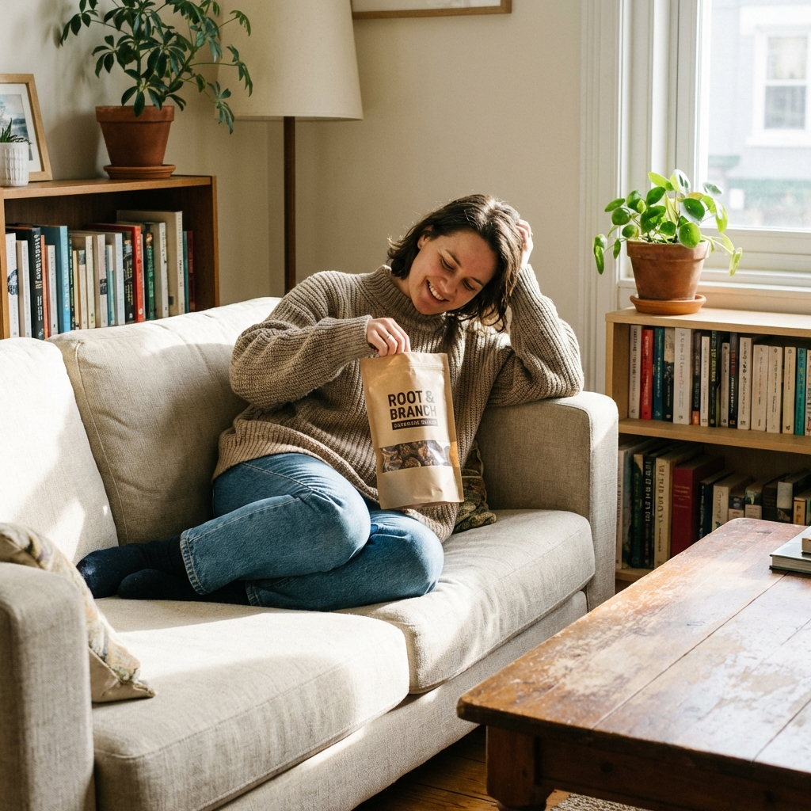

From Levin to the World: Our New Zealand Story
Published on Feb 2, 2026 • 7 min read

Every great brand has an origin story, and ours begins in the small town of Levin, New Zealand. What started as a father-son dream has grown into an internationally recognized confectionery brand, but our heart remains firmly planted in Kiwi soil.
"We never set out to conquer the world—we just wanted to make the best licorice possible." - Roger Halliwell
The Humble Beginnings
In 1994, Roger Halliwell and his son Regan James had a vision. They believed New Zealand could produce licorice that rivaled the best in the world. Armed with little more than passion and a family recipe, they set up shop in Levin and began crafting their first batches.
Growing Pains and Triumphs
The early years weren't easy. Competing against established international brands was challenging, but the quality of our product spoke for itself. Word spread, first locally, then nationally, and by 1999, RJ's had become the market leader in New Zealand.
Why Levin?
You might wonder why we've stayed in Levin when bigger cities might offer more resources. The answer is simple: community. Levin has been our home, and the people here are part of our extended family. Many of our team members have been with us for decades, passing down their expertise to the next generation.
Our Global Reach
Today, RJ's products are enjoyed in over 25 countries around the world. From Australia to the United Kingdom, from the United States to Asia, licorice lovers everywhere have discovered the New Zealand magic we put into every bag.

Frequently Asked Questions
Conclusion
From a small factory in Levin to shelves around the world, our journey has been incredible. But no matter how far we go, we never forget where we came from. Every piece of RJ's licorice carries a bit of New Zealand with it—and a whole lot of love.